INF 581 Advanced Machine Learning and Autonomous Agents
Topics in Optimization
February 2026
$$ \newcommand{\vs}[1]{\boldsymbol{#1}} % vector symbol (\boldsymbol, \textbf or \vec) \newcommand{\ms}[1]{\boldsymbol{#1}} % matrix symbol (\boldsymbol, \textbf) $$Outline
Part 1
Introduction
Mathematical optimization
Find the minimum (or the maximum) of a function $f$ $$\boldsymbol{x}^* = \arg\min_{\boldsymbol{x} \in \mathcal{X}} f(\boldsymbol{x})$$
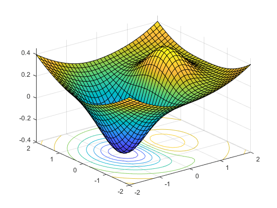
Minimize or maximize ?
In optimization literature, usually by “optimize” one mean “minimize”
In reinforcement learning by “optimize” one mean “maximize”
Same algorithms in both cases
$$ \arg\min f(x) \Leftrightarrow \arg\max -f(x) $$
Optimization in AI
Optimization is a main component of modern AI (the other one is Learning)
Optimization and Learning are highly connected
E.g. optimization is used to:
- set a model in supervised learning (e.g. weights of neural networks)
- optimize a policy in Reinforcement Learning (Direct Policy Search)
Some optimization algorithms use learning techniques (especially surrogate models)
Applications beyond AI
Mathematical optimization can be applied everywhere...
- Industry : optimize Power Grid, air traffic, planning, logistics, …
- Robotics : optimize actuators control, trajectory / energy consumption, ...
- Finance : maximize long term profits, minimize risks, ...
- Almost everything can be optimized…
- Life itself is the result of an optimization process (natural selection)
Mathematical optimization
Few applications examples among thousands
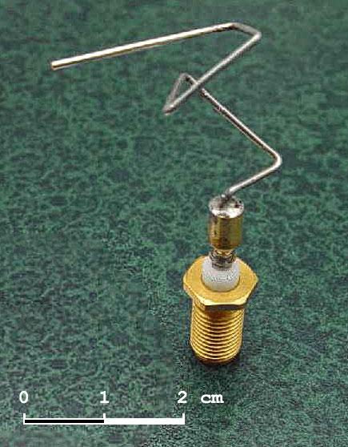
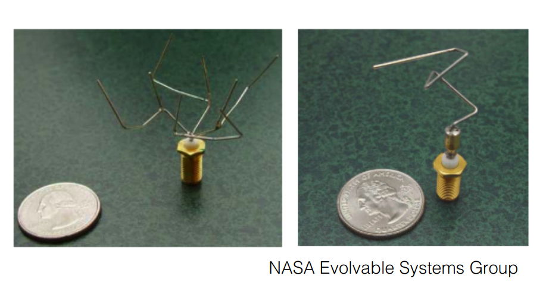
The 2006 NASA ST5 spacecraft antenna.
This complicated shape was found by an evolutionary computer design program to create the best radiation pattern.
It is known as an evolved antenna.
Mathematical optimization
Few applications examples among thousands
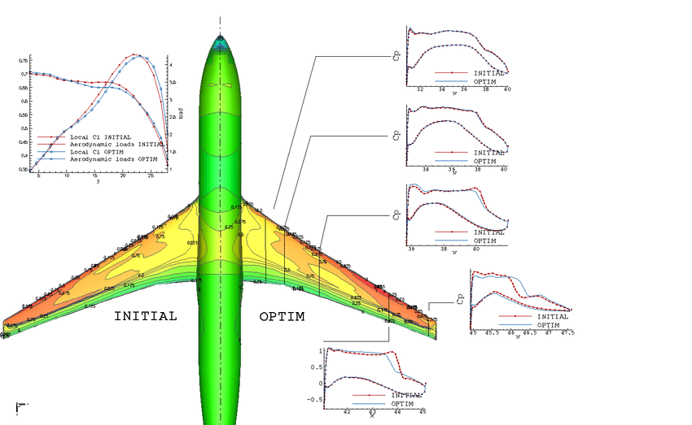
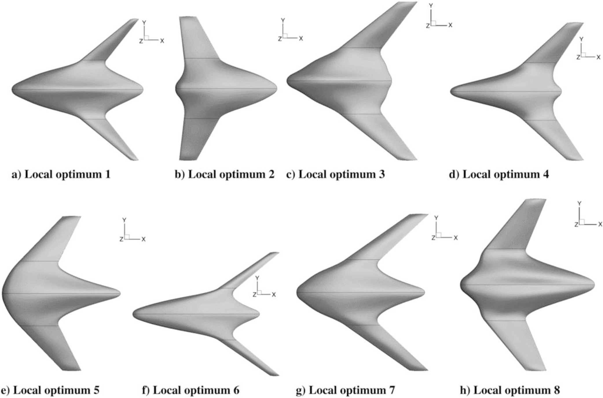
https://www.sciencedirect.com/science/article/pii/S1568494617305690
Mathematical optimization
Few applications examples among thousands
Production planning in electric power grid
Huge optimization problem with millions of dimensions!
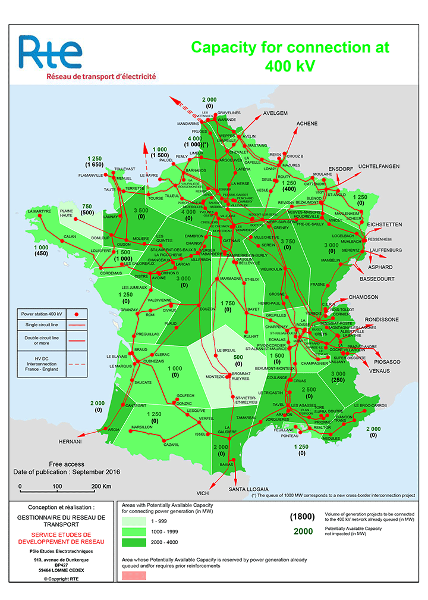
Many different problems and algorithms
Problems
- Objective function shape:
- Linear / non-linear
- Convex / non-convex, …
- Continuous / discrete (combinatorial) / mixte
- Uni-modal / multi-modal
- Multi-valued objective function:
- Multi objective VS mono objective
- With / without gradient formulation
- Stochastic objective function
- Constrained or not
- Dynamical (multi-stage optimization)
- Optimize vectors VS optimize functions (using Hamiltonian)
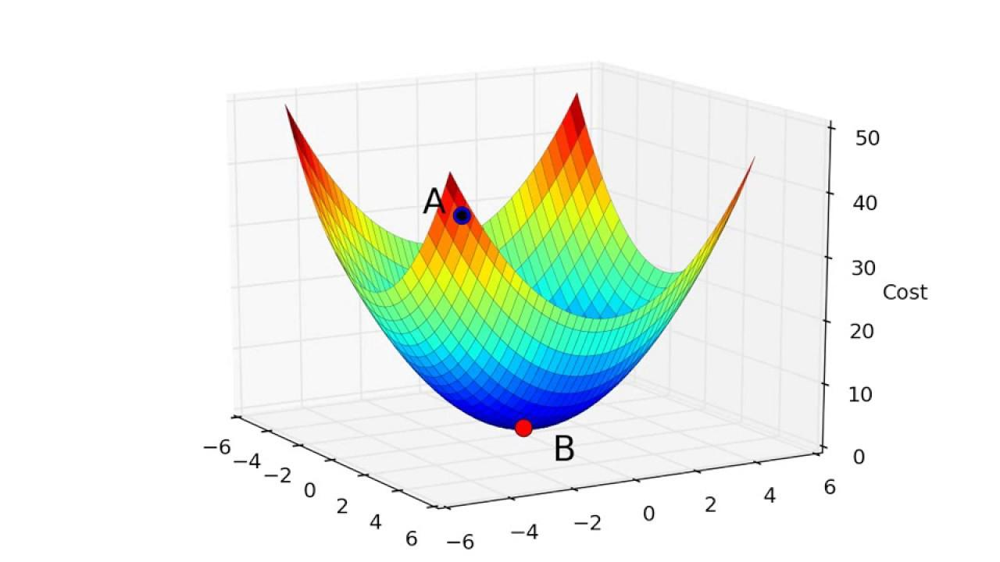

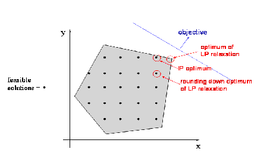

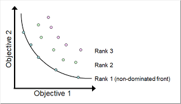
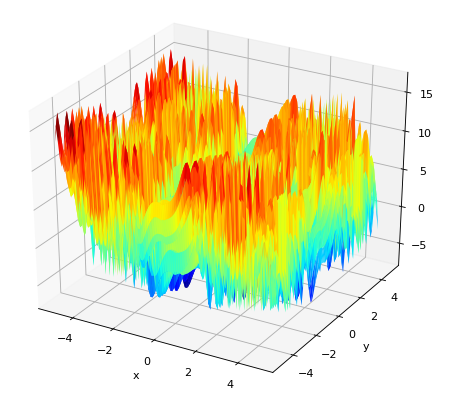
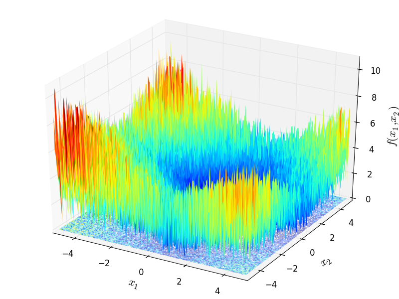
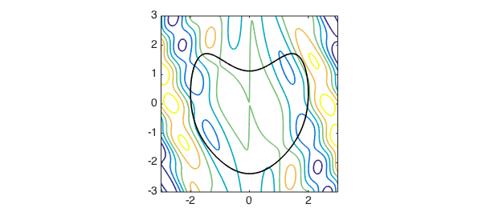
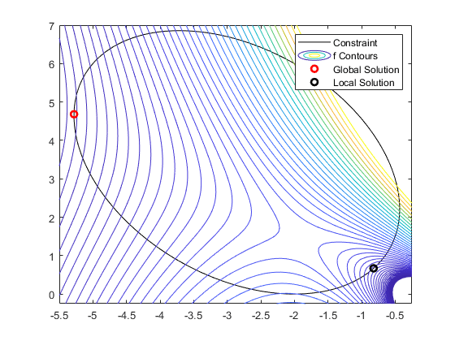
Algorithms
- Global VS Local
- Gradient based / gradient free (black box)
- Gradient based -> first order methods : gradient descent, conjugate gradient, nesterov momentum, adagrad, adam, …
- Gradient based -> 2nd order methods : newton’s methods, quasi newton methods
- Population methods: genetic algorithms, differential evolution, particle swarm optimization, …
- Stochastic algorithm (random sampling)
- Multiobjective optimization
- Surrogate models
- Expression optimization: genetic programming,...
Gradient descent
Iteratively update $\boldsymbol{x}$ toward the steepest slope $$\boldsymbol{x} \leftarrow \boldsymbol{x} - \alpha \nabla_{\boldsymbol{x}}f(\boldsymbol{x})$$
Requires gradient of the objective function
- $\alpha$ is the step size which influence the convergence rate
- How to adapt it to converge faster ?

Popular variants of SGD in machine learning:
- Momentum optimization: Nesterov Momentum / Nesterov Accelerated Gradient (NAG)
- Adaptive methods: AdaGrad, RMSProp, Adam
Momentum methods
"Classic" Gradient Descent: $$\boldsymbol{x} \leftarrow \underbrace{\boldsymbol{x}}_{\text{position}} - \underbrace{\alpha ~ \nabla_{\boldsymbol{x}}f(\boldsymbol{x})}_{\text{momentum}}$$
Gradient Descent with momentum: $$\boldsymbol{m} \leftarrow \underbrace{\beta \boldsymbol{m}}_{\text{momentum}} - \underbrace{\alpha ~ \nabla_{\boldsymbol{x}}f(\boldsymbol{x})}_{\text{acceleration}}$$ $$\boldsymbol{x} \leftarrow \underbrace{\boldsymbol{x}}_{\text{position}} + \underbrace{\boldsymbol{m}}_{\text{momentum}}$$
Gradient free methods
(“black box optimization”)
Why gradient free methods ?
- gradient of objective function not always known
- or difficult to compute
- convergence can be slow
- gradient based methods search for local optima (doesn’t help for multimodal functions)
Part 2
Population methods
Population methods
Descent methods:
- A single solution is updated incrementally toward a local minimum
Population methods:
- Iterative methods where several solutions (called individuals) are tested at each iteration
- Information at different points in the solution space can be shared between individuals
- Help the algorithm to avoid being stuck in a local optimum
- Easy to parallelize
Evolutionary Algorithms
(a.k.a. Evolutionary Computing)
Evolutionary Algorithms
Biomimetic algorithms, inspired by natural selection and evolution
Fitter individuals are more likely to pass on their genes to the next generation.
Chromosomes of the fitter individuals are passed on to the next generation after undergoing the genetic operations of crossover and mutation
Families of Evolutionary Algorithms (1/3)
Evolution Strategies (ES)
- Ingo Rechenberg & Hans-Paul Schwefel [1965]
- Made for continuous solution spaces
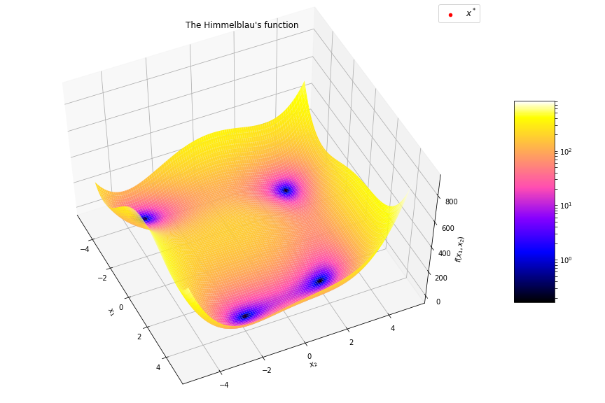
Families of Evolutionary Algorithms (2/3)
Genetic Algorithms (GA)
- J.H. Holland [1975]
- Dissociate genotype and phenotype
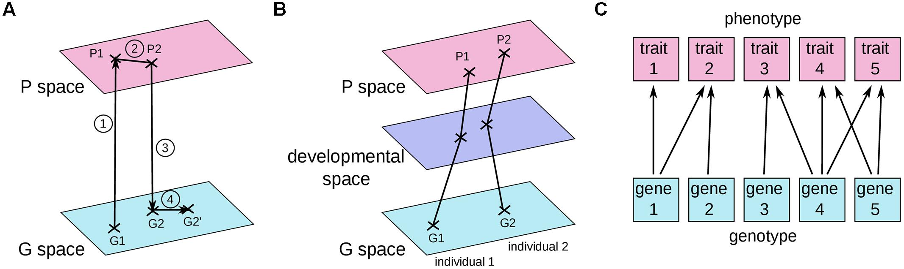
Families of Evolutionary Algorithms (3/3)
Genetic Programming (GP)
- J. Koza [1988]
- Based on Genetic Algorithms, but individuals are programs
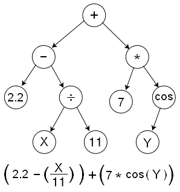
Past, present, future
- Old methods (60’s)
- Genetic Algorithms (and EAs) became very popular after the publication of Goldberg’s book in 1989
- Evolution Strategies are very popular thanks CMA-ES
- The state of the art nowadays
- Works up to few hundreds of dimensions (solution space)
- Recently regains attention in RL community
e.g. [arxiv.org/pdf/1703.03864]
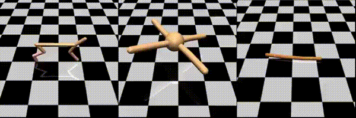
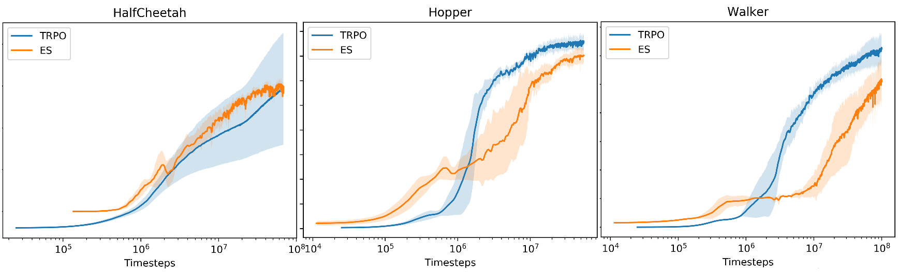

Generic Evolutionary Algorithm
Illustration on the Rosenbrock function
$$f(\boldsymbol{x}) = \sum_{i=1}^{n-1} \left[ 100(x_{i+1} - x_i^2)^2 + (x_i - 1)^2 \right]$$
$$f(\boldsymbol{x}) = (1 - x_1)^2 + 100 (x_2 - x_1^2)^2$$
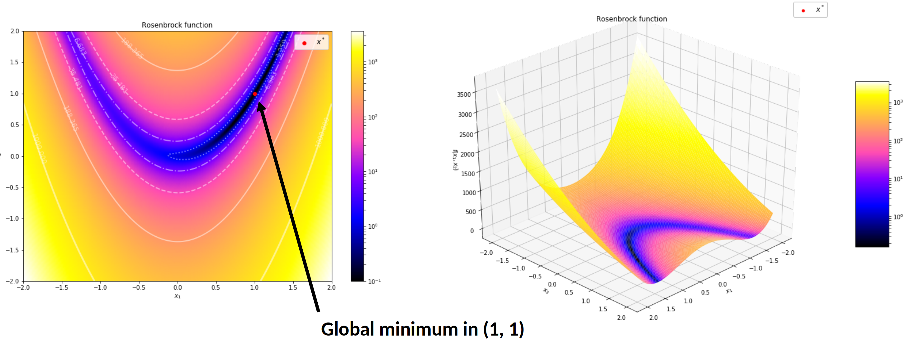
Generic Evolutionary Algorithm
$\quad\quad$ $f$: the objective function
Algorithm parameter:
$\quad\quad$ $\mu$: number of parents per generation
$\quad\quad$ $\rho$: number of parents used to make each child
$\quad\quad$ $\lambda$: number of children per generation
$\quad\quad$ mutation operator
$\quad\quad$ mating selection operator
$\quad\quad$ survivor selection operator
$\quad\quad$ termination criterion
$\quad\quad$ an initialization procedure
Evaluate each individual $\boldsymbol{x}$: $f(\boldsymbol{x})$
FOR EACH generation (until termination criterion)
$\quad$ FOR EACH child $\boldsymbol{x}$
$\quad\quad$ 1. select $\rho$ parents
$\quad\quad$ 2. $\boldsymbol{x} \leftarrow$ recombinate selected parents (crossover)
$\quad\quad$ 3. mutate $\boldsymbol{x}$
$\quad\quad$ 4. evaluate $f(\boldsymbol{x})$
$\quad$ Select the next generation of $\mu$ individuals
RETURN the best individual
Generic Evolutionary Algorithm
$\quad\quad$ $f$: the objective function
Algorithm parameter:
$\quad\quad$ $\mu$: number of parents per generation
$\quad\quad$ $\rho$: number of parents used to make each child
$\quad\quad$ $\lambda$: number of children per generation
$\quad\quad$ mutation operator
$\quad\quad$ mating selection operator
$\quad\quad$ survivor selection operator
$\quad\quad$ termination criterion
$\quad\quad$ an initialization procedure
Initialize a population of $\mu$ individuals
Evaluate each individual $\boldsymbol{x}$: $f(\boldsymbol{x})$
FOR EACH generation (until termination criterion)
$\quad$ FOR EACH child $\boldsymbol{x}$
$\quad\quad$ 1. select $\rho$ parents
$\quad\quad$ 2. $\boldsymbol{x} \leftarrow$ recombinate selected parents (crossover)
$\quad\quad$ 3. mutate $\boldsymbol{x}$
$\quad\quad$ 4. evaluate $f(\boldsymbol{x})$
$\quad$ Select the next generation of $\mu$ individuals
RETURN the best individual
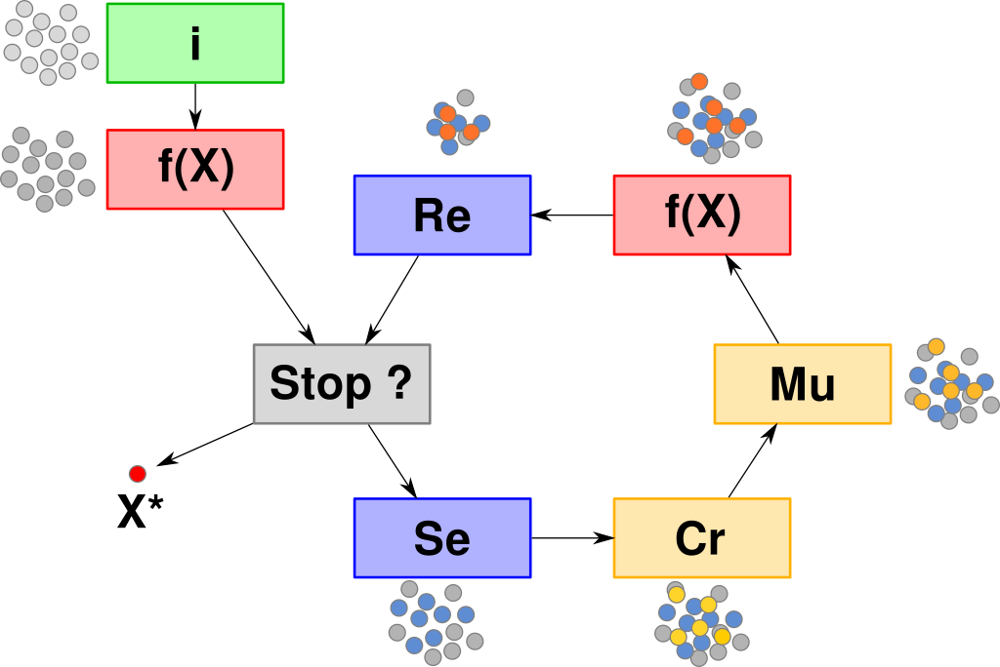
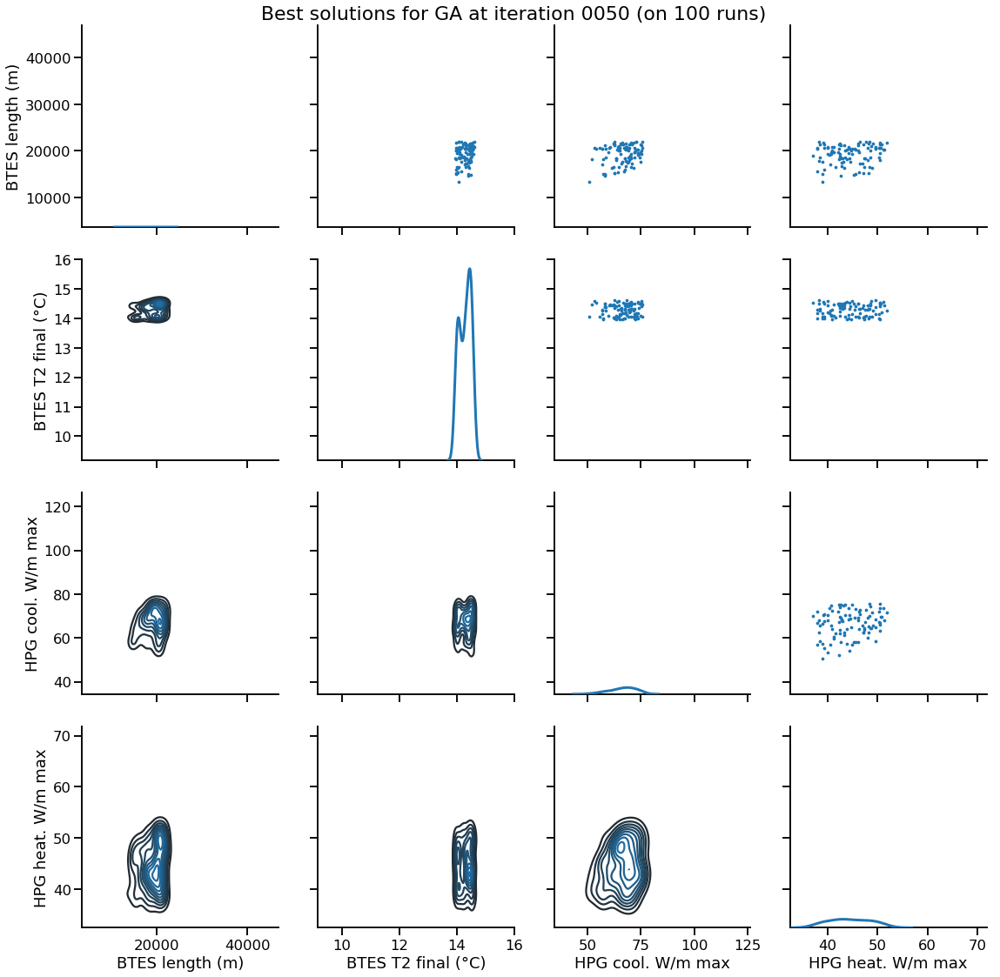
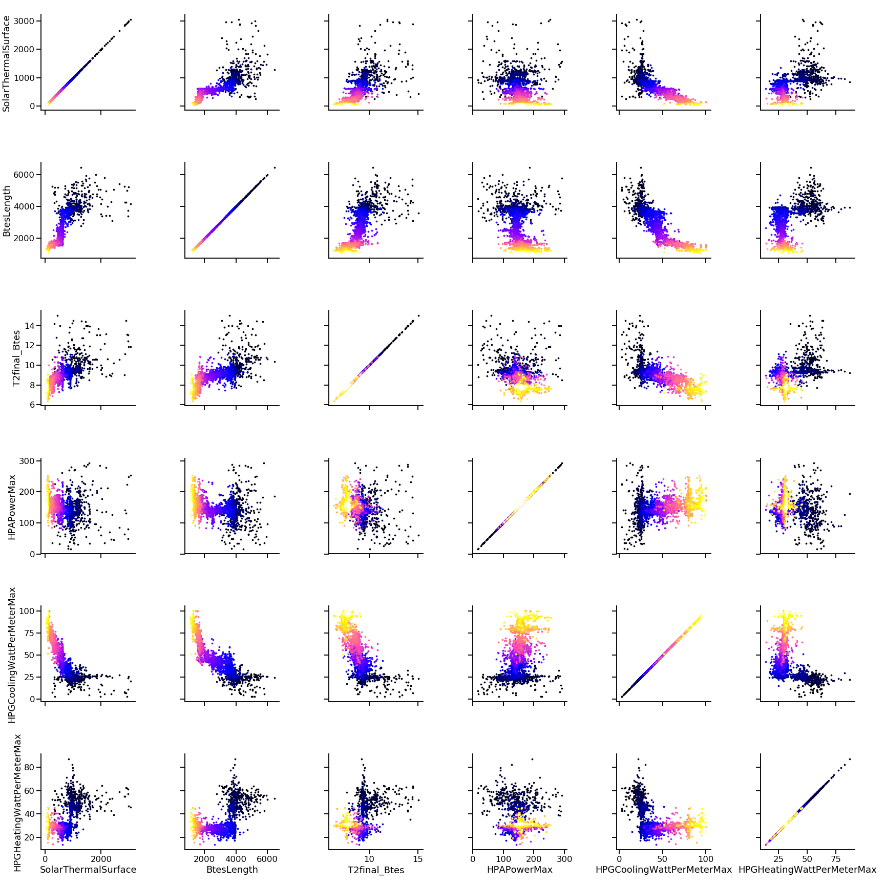
Solution encoding
The efficiency of mutation and recombination operators (a.k.a. search operators) greatly depends on this definition !
Solution encoding
In some evolutionary algorithms, the solution space is tailored for specific needs of search operators
Then a distinction has to be made between:
- The solution space used by the objective function f : the phenotype
- The solution space used by the algorithm : the genotype
The data structure used to store the genotype is a chromosome
Evolution Strategies like classical optimization techniques don’t make this distinction and simply use vectors of real numbers
But Genetic Algorithms and Genetic Programming does !
Solution encoding
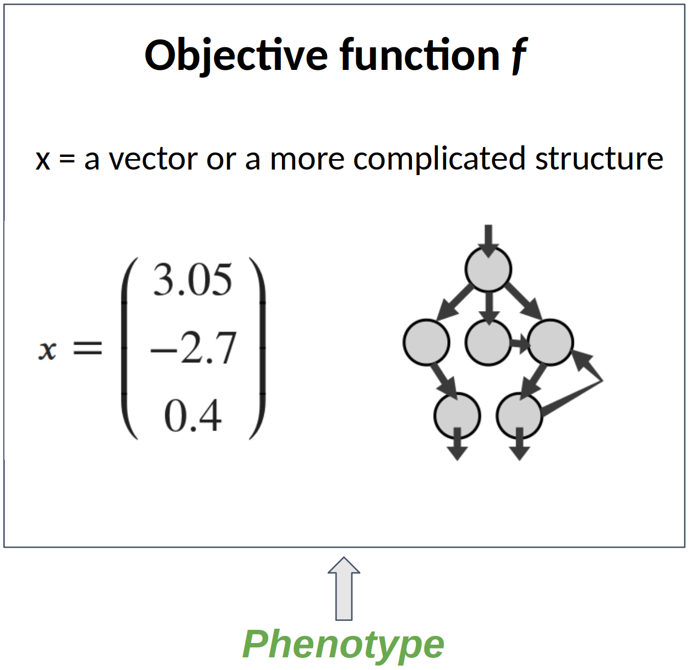
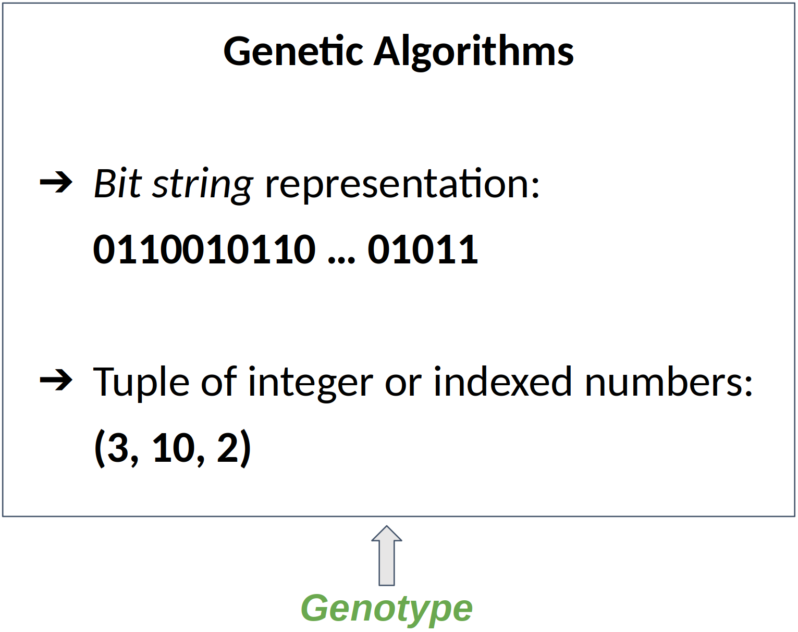
Genotype-Phenotype Mapping
Can be convenient for combinatorial problems: Travelling salesman problem, Knapsack problem, …
Be careful
- A point in the genotype space might not represent a valid point in the phenotype space
- The genotype-phenotype mapping should avoid bias:
- Two individuals close in the genome space should be close in the phenotype space and vice versa
- Another example of bias is when the mapping could map most of the genotype space to a small set of phenotypes
Hamming cliff
Example of bias with the “classic” integer to binary mapping:
| phenotype | 7 = 0111 | genotype |
| 8 = 1000 |
Individuals close in the phenotype space but “far” (according to the Hamming distance) in the genotype space
- To go from one individual to the other, many mutations are required despite their small distance in the phenotype space
- This disturb variation operators (crossover and mutation)
- Individuals are trapped by this distortion, that’s the "Hamming cliff"
Solution: use the Gray code
Gray code
decimal values (phenotype) ↔ bit strings (genotype)
A binary encoding such that the binary representation of adjacent decimal numbers only differ by one bit flip (Hamming distance = 1)
def bin_to_gray(n):
return n ^ (n >> 1) # N XOR (N BITWISE_SHIFT_RIGHT 1)
def gray_to_bin(n):
mask = n >> 1
while (mask != 0):
n = n ^ mask
mask = mask >> 1
return n
| Decimal | Binary | Gray |
|---|---|---|
| 0 | 0000 | 0000 |
| 1 | 0001 | 0001 |
| 2 | 0010 | 0011 |
| 3 | 0011 | 0010 |
| 4 | 0100 | 0110 |
| 5 | 0101 | 0111 |
| 6 | 0110 | 0101 |
| 7 | 0111 | 0100 |
| 8 | 1000 | 1100 |
| 9 | 1001 | 1101 |
| 10 | 1010 | 1111 |
| 11 | 1011 | 1110 |
| 12 | 1100 | 1010 |
| 13 | 1101 | 1011 |
| 14 | 1110 | 1001 |
| 15 | 1111 | 1000 |
Genotype-Phenotype mapping
Genetic Algorithms
$\quad\quad$ $f$: the objective function
Algorithm parameter:
$\quad\quad$ $\mu$: number of parents per generation
$\quad\quad$ $\rho$: number of parents used to make each child
$\quad\quad$ $\lambda$: number of children per generation
$\quad\quad$ mutation operator
$\quad\quad$ mating selection operator
$\quad\quad$ survivor selection operator
$\quad\quad$ termination criterion
$\quad\quad$ an initialization procedure
Initialize a population of $\mu$ individuals
Genotype-Phenotype mapping
Evaluate each individual $\boldsymbol{x}$: $f(\boldsymbol{x})$
FOR EACH generation (until termination criterion)
$\quad$ FOR EACH child $\boldsymbol{x}$
$\quad\quad$ 1. select $\rho$ parents
$\quad\quad$ 2. $\boldsymbol{x} \leftarrow$ recombinate selected parents (crossover)
$\quad\quad$ 3. mutate $\boldsymbol{x}$
$\quad\quad$ 4. genotype-phenotype mapping
$\quad\quad$ 5. evaluate $f(\boldsymbol{x})$
$\quad$ Select the next generation of $\mu$ individuals
RETURN the best individual
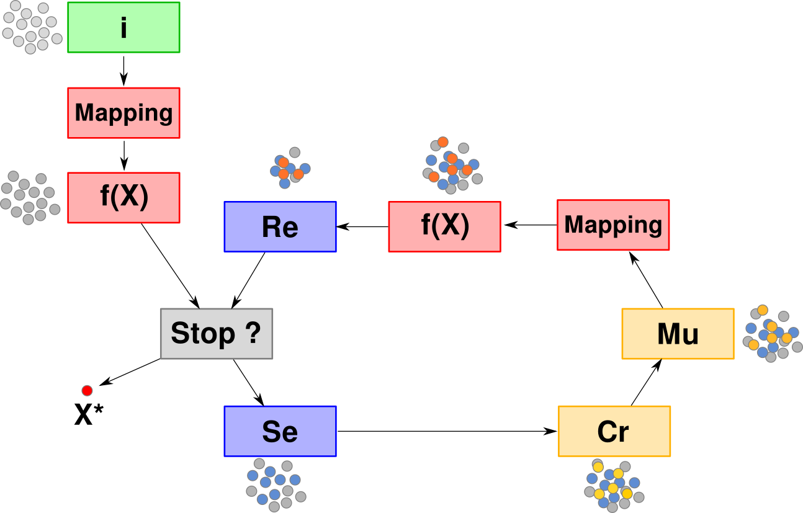
Solution encoding
Genetic Programming: tree structure
- Symbolic representation
- An individual
- = a program
- = a tree of instructions
- Nodes
- = genes
- = instructions, operators, ...
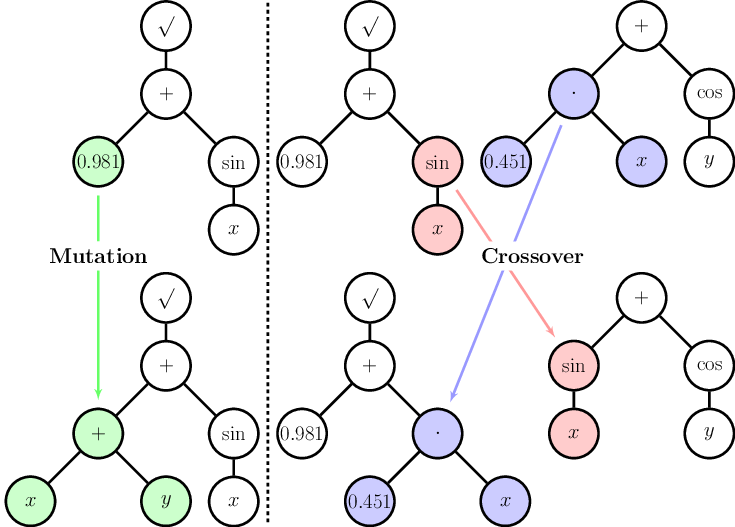
Initial population
Initial population should be spread over the solution space to increase chances that samples are close to best regions
Should define a region of interest to sample the initial population:
- Hyper rectangle to sample into with a uniform distribution
- Point to sample around with a multivariate normal distribution
For GA using bit string: a random combination of 0 and 1 is reasonable
Mating selection
Can either:
- Randomly select parents
- Select among an “elite” population (best ones): apply a competition
Survivor Selection
Select individuals for the next generation among:
- Children (“offspring”) only
- Children + parents (best individuals can live several generations)
Notation for Evolution Strategies:
| $(\mu \color{\red}{+} \lambda)\text{-ES}$ | selection in $\{ \text{parents} \} \cup \{ \text{offspring} \}$ |
| $(\mu \color{\red}{,} \lambda)\text{-ES}$ | selection in $\{ \text{offspring} \}$ |
Crossover (recombination) in GA
Single-point crossover
| Parent 1 | ● ● ● ● ● ● ● ● ● ● ● ● ● ● ●|● ● ● ● ● ● ● ● |
| Parent 2 | ● ● ● ● ● ● ● ● ● ● ● ● ● ● ●|● ● ● ● ● ● ● ● |
| Child | ● ● ● ● ● ● ● ● ● ● ● ● ● ● ● ● ● ● ● ● ● ● ● |
Two-point / k-point crossover
| Parent 1 | ● ● ● ● ● ● ● ● ● ●|● ● ● ● ● ● ● ●|● ● ● ● ● |
| Parent 2 | ● ● ● ● ● ● ● ● ● ●|● ● ● ● ● ● ● ●|● ● ● ● ● |
| Child | ● ● ● ● ● ● ● ● ● ● ● ● ● ● ● ● ● ● ● ● ● ● ● |
Uniform crossover
| Parent 1 | ● ● ● ● ● ● ● ● ● ● ● ● ● ● ● ● ● ● ● ● ● ● ● |
| Parent 2 | ● ● ● ● ● ● ● ● ● ● ● ● ● ● ● ● ● ● ● ● ● ● ● |
| Child | ● ● ● ● ● ● ● ● ● ● ● ● ● ● ● ● ● ● ● ● ● ● ● |
Each gene or bit is chosen from either parent with equal probability
Crossover (recombination) in ES
Global intermediate recombination
- Each component of the child solution vector $x$ is the arithmetic mean of its parents' components
Discrete recombination
- Each component of the child solution vector $x$ is chosen from either parent with equal probability
| Parent 1 | ● ● ● ● ● ● ● ● ● ● ● ● ● ● ● ● ● ● ● ● ● ● ● |
| Parent 2 | ● ● ● ● ● ● ● ● ● ● ● ● ● ● ● ● ● ● ● ● ● ● ● |
| Child | ● ● ● ● ● ● ● ● ● ● ● ● ● ● ● ● ● ● ● ● ● ● ● |
Mutation
To explore more of the state space
Can be:
- Each bit in a binary-valued chromosome typically has a small probability of being flipped: for a chromosome with $m$ bits, this mutation rate is typically set to $1/m$ ⇒ one mutation per child chromosome in average
| Before mutation | ● ● ● ● ● ● ● ● ● ● ● ● ● ● ● ● ● ● ● ● ● ● ● |
| After mutation | ● ● ● ● ● ● ● ● ● ● ● ● ● ● ● ● ● ● ● ● ● ● ● |
- Common mutation for real-valued chromosomes is to add zero-mean Gaussian noise
Controlling mutation strength
In real-valued chromosomes (ES)
How to set the standard deviation $\sigma$ of the Gaussian noise ?
- By deterministic rule: Rechenberg’s 1/5th rule
- By evolutive rules (Schwefel): Self-Adaptation Evolution Strategies
Rechenberg’s 1/5th rule:
- Increase step-size $\sigma$ if more than 20% of the new solutions (individuals) are “successful” (i.e. better than previous generations)
- Decrease otherwise
Self-Adaptation:
- $\sigma$ become a part of individuals genes
- Each individual has a different $\sigma$
- It’s subject to mutations too
- An individual with an inappropriate $\sigma$ simply disappear !
Termination criteria
Can be:
- A fixed number of generation
- A minimal rate of improvement in the average fitness (score)
- A minimal rate of change in the solution space
Example: $(1 + 1)\text{-ES}$
$\quad\quad$ $f$: the objective function
$\quad\quad$ $\boldsymbol{x}$: initial solution
FOR EACH generation
$\quad\quad$ 1. mutation of $\sigma$ (individual strategy) : $\sigma' \leftarrow $ Rechenberg's 1/5th rule
$\quad\quad$ 2. mutation of $\boldsymbol{x}$ (current solution) : $\boldsymbol{x}' \leftarrow \boldsymbol{x} + \sigma' ~ \mathcal{N}(0,1)$
$\quad\quad$ 3. eval $f(\boldsymbol{x}')$
$\quad\quad$ 4. survivor selection $\boldsymbol{x} \leftarrow \boldsymbol{x}'$ and $\sigma \leftarrow \sigma'$ if $f(\boldsymbol{x}') \leq f(\boldsymbol{x})$
RETURN $\boldsymbol{x}$
Example: $(1 + 1)\text{-SA-ES}$
$\quad\quad$ $f$: the objective function
$\quad\quad$ $\boldsymbol{x}$: initial solution
Algorithm parameter:
$\quad\quad$ $\tau$: self-adaptation learning rate
FOR EACH generation
$\quad\quad$ 1. mutation of $\sigma$ (current individual strategy) : $\sigma' \leftarrow $ $\sigma ~ e^{\tau \mathcal{N}(0,1)}$
$\quad\quad$ 2. mutation of $\boldsymbol{x}$ (current solution) : $\boldsymbol{x}' \leftarrow \boldsymbol{x} + \sigma' ~ \mathcal{N}(0,1)$
$\quad\quad$ 3. eval $f(\boldsymbol{x}')$
$\quad\quad$ 4. survivor selection $\boldsymbol{x} \leftarrow \boldsymbol{x}'$ and $\sigma \leftarrow \sigma'$ if $f(\boldsymbol{x}') \leq f(\boldsymbol{x})$
RETURN $\boldsymbol{x}$
Example: $(\mu/\rho + \lambda)\text{-SA-ES}$
$\quad\quad$ $f$: the objective function
Algorithm parameter:
$\quad\quad$ $\tau$: self-adaptation learning rate
$\quad\quad$ $\rho$: number of parents used to make each child
$\quad\quad$ $\lambda$: number of children per generation
$\quad\quad$ mating selection operator
$\quad\quad$ survivor selection operator
FOR EACH generation
$\quad\quad$ 1. randomly select $\rho$ parents
$\quad\quad$ 2. $(\boldsymbol{x}, \sigma) \leftarrow$ recombination of selected parents (if $\rho > 1$)
$\quad\quad$ 4. mutation of $\boldsymbol{x}$ (objective param) : $\boldsymbol{x} \leftarrow \boldsymbol{x} + \sigma ~ \mathcal{N}(0,1)$
$\quad\quad$ 5. evaluate $f(\boldsymbol{x})$
Differential Evolution
Storn, R and Price, K, Differential Evolution - a Simple and Efficient Heuristic for Global Optimization over Continuous Spaces, Journal of Global Optimization, 1997, 11, 341 - 359
$\quad\quad\quad$ Choose 3 random distinct individuals $\boldsymbol{a}$, $\boldsymbol{b}$ et $\boldsymbol{c}$
$\quad\quad\quad$ $\boldsymbol{b}$ and $\boldsymbol{c}$ define the direction and the amplitude of the mutation (i.e. the search vector)
$\quad\quad\quad$ where $\omega$ is a mutation amplification factor (a scalar)
$\quad\quad$ 2. CROSSOVER
$\quad\quad\quad$ Make the candidate individual $\boldsymbol{a}'$ using the binary crossover $$ a'_i = \begin{cases} z_i & \text{if } i = j \text{ or with probability } p \\ x_i & \text{otherwise} \end{cases} $$
Differential Evolution

Differential Evolution
Strength: require few meta parameters
- $p$ : the crossover probability (typically 0.5)
- $w$ : the differential weight (typically between 0.4 and 1)
Implemented in `scipy.optimize`
Cross-Entropy Method
Cross-Entropy Method
Maintains an explicit probability distribution over the solution space
- Called a proposal distribution $P_{\boldsymbol{\theta}}$
- Used to propose new samples for the next generation
- Parameterized by $\boldsymbol{\theta}$
- The family of probability distributions is chosen according to the objective function landscape
Usually: a multivariate normal distribution with $\boldsymbol{\theta} = (\boldsymbol{\mu}, \ms{\Sigma})$
The objective function $f$
Example used in the next slides — the Rosenbrock function (to be minimized): $f(x_1, x_2) = (1 - x_1)^2 + 100 \, (x_2 - x_1^2)^2$
The global minimum $f(1, 1) = 0$ is shown in red
Cross-Entropy Method
At each iteration:
- Sample from the proposal distribution $P_{\boldsymbol{\theta}}$
- Select best samples according to the objective function $f$
- Update the proposal distribution to fit the best samples
- Sample from the proposal distribution $P_{\boldsymbol{\theta}}$
- Select best samples according to the objective function $f$
- Update the proposal distribution to fit the best samples
- Sample from the proposal distribution $P_{\boldsymbol{\theta}}$
- Select best samples according to the objective function $f$
- Update the proposal distribution to fit the best samples
- Sample from the proposal distribution $P_{\boldsymbol{\theta}}$
- Select best samples according to the objective function $f$
- Update the proposal distribution to fit the best samples
- Sample from the proposal distribution $P_{\boldsymbol{\theta}}$
- Select best samples according to the objective function $f$
- Update the proposal distribution to fit the best samples
- Sample from the proposal distribution $P_{\boldsymbol{\theta}}$
- Select best samples according to the objective function $f$
- Update the proposal distribution to fit the best samples
Cross-Entropy Method
Evolution of the proposal distribution $P_{\boldsymbol{\theta}}$ (covariance ellipses) at the beginning of each iteration
Cross-Entropy Method
$f$: the objective function
$\mathbb{P}$: family of probability distributions
$\boldsymbol{\theta}$: initial parameters of the proposal distribution $P_{\boldsymbol{\theta}}$
Meta parameters:
$m$: sample size
$m_{\text{elite}}$: number of best samples used to fit $\boldsymbol{\theta}$
WHILE the termination criterion is not met
$\text{elite} \leftarrow$ { $m_{\text{elite}}$ best samples } (i.e. the samples with the lowest $f$ values)
$\boldsymbol{\theta} \leftarrow $ fit $P_{\boldsymbol{\theta}}$ to the elite samples
$\text{elite} \leftarrow$ { $m_{\text{elite}}$ best samples } (i.e. the samples with the lowest $f$ values)
$\boldsymbol{\theta} \leftarrow $ fit $P_{\boldsymbol{\theta}}$ to the elite samples
$\text{elite} \leftarrow$ { $m_{\text{elite}}$ best samples } (i.e. the samples with the lowest $f$ values)
$\boldsymbol{\theta} \leftarrow $ fit $P_{\boldsymbol{\theta}}$ to the elite samples
$\text{elite} \leftarrow$ { $m_{\text{elite}}$ best samples } (i.e. the samples with the lowest $f$ values)
$\boldsymbol{\theta} \leftarrow $ fit $P_{\boldsymbol{\theta}}$ to the elite samples
$\text{elite} \leftarrow$ { $m_{\text{elite}}$ best samples } (i.e. the samples with the lowest $f$ values)
$\boldsymbol{\theta} \leftarrow $ fit $P_{\boldsymbol{\theta}}$ to the elite samples
$\text{elite} \leftarrow$ { $m_{\text{elite}}$ best samples } (i.e. the samples with the lowest $f$ values)
$\boldsymbol{\theta} \leftarrow $ fit $P_{\boldsymbol{\theta}}$ to the elite samples
RETURN $\boldsymbol{\theta}$ (in practice, the solution estimate is the final mean $\boldsymbol{\mu}$ of $P_{\boldsymbol{\theta}}$)
The proposal distribution $P_{\boldsymbol{\theta}}$
In the case of the multivariate normal distribution, parameters are updated according to the maximum likelihood estimate:
$$\boldsymbol{\mu}^{(k+1)} = \frac{1}{m_{\text{elite}}} \sum_{i=1}^{m_{\text{elite}}} \boldsymbol{x}^{(i)}$$ $$\ms{\Sigma}^{(k+1)} = \frac{1}{m_{\text{elite}}} \sum_{i=1}^{m_{\text{elite}}} \left( \boldsymbol{x}^{(i)} - \boldsymbol{\mu}^{(k+1)} \right) \left( \boldsymbol{x}^{(i)} - \boldsymbol{\mu}^{(k+1)} \right)^{\top}$$
with:
$k$ = the iteration index, so that $\boldsymbol{\theta}^{(k+1)} = (\boldsymbol{\mu}^{(k+1)}, \ms{\Sigma}^{(k+1)})$
$m_{\text{elite}}$ = the number of “elite” (i.e. best) samples
$\boldsymbol{x}^{(1)}, \dots, \boldsymbol{x}^{(m_{\text{elite}})}$ = the elite samples of iteration $k$
Why “cross-entropy”?
Fitting $P_{\boldsymbol{\theta}}$ to the elite samples by maximum likelihood is equivalent to minimizing the cross-entropy $H$ between the empirical distribution $\hat{p}_{\text{elite}}$ of the elite samples and $P_{\boldsymbol{\theta}}$:
$$\boldsymbol{\theta}^{(k+1)} = \arg\min_{\boldsymbol{\theta}} \; H(\hat{p}_{\text{elite}}, P_{\boldsymbol{\theta}}) = \arg\max_{\boldsymbol{\theta}} \; \frac{1}{m_{\text{elite}}} \sum_{i=1}^{m_{\text{elite}}} \log P_{\boldsymbol{\theta}}(\boldsymbol{x}^{(i)})$$Historically, the method comes from rare-event simulation: $P_{\boldsymbol{\theta}}$ iteratively approaches the optimal importance-sampling distribution — the one concentrated on the event of interest (here: sampling low values of $f$).
The proposal distribution $P_{\boldsymbol{\theta}}$
The multivariate normal distribution is not always the right family of distributions to choose…
Here, a mixture model would be a better choice…
Cross-Entropy Method
Meta parameters:
- The family of probability distributions $\mathbb{P}$
- The number of samples $m$ drawn at each iteration
- The number of best samples $m_{\text{elite}}$ selected at each iteration to update $\boldsymbol{\theta}$
Termination criteria:
- Number of iterations
- Convergence of $\boldsymbol{\theta}$ (e.g. $\operatorname{tr}(\ms{\Sigma})$ below a threshold)
- …
Cross-Entropy Method
Strengths:
- Simplicity
- Fast convergence on many practical problems
Weaknesses:
- Premature convergence: the variance can collapse too early (hence the noise added in the “noisy” CEM below)
- Scales poorly to high dimensions ($\ms{\Sigma}$ has $O(n^2)$ parameters)
- Sensitive to the choice of the distribution family and of $m$, $m_{\text{elite}}$
Example:
I. Szita and A. Lőrincz, Learning Tetris Using the Noisy Cross-Entropy Method (2006), Neural Computation, 18(12), pp.2936–2941 [DOI]
Bibliography
- Rubinstein, R., 1999. The cross-entropy method for combinatorial and continuous optimization. Methodology and Computing in Applied Probability, 1(2), pp.127–190. [PDF]
- Rubinstein, R.Y., 2001. Combinatorial optimization, cross-entropy, ants and rare events. Stochastic optimization: algorithms and applications, pp.303-363. [PDF]
- Rubinstein, R.Y. and Kroese, D.P., 2004. The cross-entropy method: a unified approach to combinatorial optimization, Monte-Carlo simulation, and machine learning (Vol. 133). New York: Springer.
CMA-ES
Covariance Matrix Adaptation Evolution Strategy
CMA-ES
Hansen, N. and A. Ostermeier (2001) Completely Derandomized Self-Adaptation in Evolution Strategies. Evolutionary Computation, 9(2), pp. 159-195
Nikolaus Hansen now at Inria in RandOpt team (CMAP)
CMA-ES:
- For difficult optimisation problems in continuous domain
- Usually considered as the best black box algorithm
- Search space : between 3 and a hundred
CMA-ES
- Like the cross-entropy method, a distribution is improved over time based on samples
- CMA uses multivariate Gaussian distributions with 3 parameters
$\boldsymbol{x} \sim \mathcal{N}$ ( $ \boldsymbol{m} $, $ \sigma^2 $ $ \boldsymbol{C} $ )
CMA maintains:
- a mean vector (position)
- a step size scalar (amplitude)
- a covariance matrix (direction)
CMA-ES
Like the cross-entropy method, these 3 parameters are updated at each iteration to converge such that the proposal distribution $\mathcal{N}(\boldsymbol{m}, \sigma^2\boldsymbol{C})$ focus on the global optima $\boldsymbol{x}^*$

CMA-ES
At each iteration, $\lambda$ points are sampled from this distribution
$$\boldsymbol{x}_i \sim \mathcal{N}(\boldsymbol{m}, \sigma^2 \boldsymbol{C}) \quad \text{for } i = 1, \ldots, \lambda$$
The samples are then sorted according to their objective function value
$$f(\boldsymbol{x}_1) \leq f(\boldsymbol{x}_2) \leq \ldots \leq f(\boldsymbol{x}_\lambda)$$
CMA-ES
Step 1: Update $\boldsymbol{m}$
$$\boldsymbol{x}_i = \boldsymbol{m} + \sigma \boldsymbol{y}_i, \quad \boldsymbol{y}_i \sim \mathcal{N}(\boldsymbol{0}, \boldsymbol{C}), \quad \text{for } i = 1, \ldots, \lambda$$ $$ \boldsymbol{m} \leftarrow \sum_{i=1}^{\mu} w_i \boldsymbol{x}_{i:\lambda} = \boldsymbol{m} + \sigma \boldsymbol{y}_w \quad \text{where } \boldsymbol{y}_w = \sum_{i=1}^{\mu} w_i \boldsymbol{y}_{i:\lambda} $$

CMA-ES
Step 2: Update $\boldsymbol{C}$
The covariance update is then $$ \boldsymbol{C} \leftarrow (1 - c_1 - c_{\mu}) \boldsymbol{C} + \underbrace{c_1 \boldsymbol{p_c} \boldsymbol{p_c}^\top}_{\text{rank-one update}} + \underbrace{c_{\mu} \sum_{i=1}^{\mu} w_i \boldsymbol{y}_{i:\lambda} \boldsymbol{y}_{i:\lambda}^\top}_{\text{rank-$\mu$ update}} $$ Rank-one update using cumulation vector allow for correlations between consecutive steps to be exploited, permitting the covariance matrix to elongate itself more quickly along a favorable axis. Rank-$\mu$ update the direction according to best solutions
CMA-ES
Step 3: Update $\sigma$
The new step size $\sigma$ is obtained according to $$ \sigma \leftarrow \sigma \times \underbrace{ \exp\left( \frac{\color{gray}{c_\sigma}}{\color{gray}{d_\sigma}} \left( \frac{ \color{red}{\|\boldsymbol{p}_{\sigma}\|} }{ \color{blue}{\mathbb{E} \| \mathcal{N}(\boldsymbol{0}, \textbf{I}) \|} } - 1 \right) \right) }_{> 1 ~ \Leftrightarrow ~ \|\boldsymbol{p}_{\sigma}\| \text{ is greater than its expectation}} $$

CMA-ES summary
INPUT:
$\quad$ $\boldsymbol{m} \in \mathbb{R}^n, \sigma \in \mathbb{R}_+, \lambda$
INITIALIZE:
$\quad$ $\boldsymbol{C} = \textbf{I}$,
$\boldsymbol{p_c} = \boldsymbol{0}$ and
$\boldsymbol{p_\sigma} = \boldsymbol{0}$
SET:
$\quad$ $c_c \approx \frac{4}{n}$,
$c_\sigma \approx \frac{4}{n}$,
$c_1 \approx \frac{2}{n^2}$,
$c_{\mu} \approx \frac{\mu_w}{n^2}$,
$c_1 + c_{\mu} \leq 1$,
$d_\sigma \approx 1 + \sqrt{\frac{\mu_w}{n}},$ and
$\quad$ $w_i = 1 \dots \lambda$ such that $\mu_w = \frac{1}{\sum_{i=1}^{\mu} w_i^2} \approx 0.3 \lambda$
WHILE not terminate
$\quad$ $\boldsymbol{x}_i = \boldsymbol{m} + \sigma \boldsymbol{y}_i, \quad \boldsymbol{y}_i \sim \mathcal{N}(\boldsymbol{0}, \boldsymbol{C}), \quad \text{for } i = 1, \ldots, \lambda$
sampling
$\quad$ $\boldsymbol{m} \leftarrow \sum_{i=1}^{\mu} w_i \boldsymbol{x}_{i:\lambda} = \boldsymbol{m} + \sigma \boldsymbol{y}_w \quad \text{where } \boldsymbol{y}_w = \sum_{i=1}^{\mu} w_i \boldsymbol{y}_{i:\lambda}$
update mean
$\quad$ $\boldsymbol{p_c} \leftarrow (1 - c_c)\boldsymbol{p_c} + \mathbb{1}_{\{\|\boldsymbol{p_\sigma}\| < 1.5\sqrt{n}\}} \sqrt{1 - (1 - c_c)^2} \sqrt{\mu_w} \boldsymbol{y}_w$
cumulation for $\boldsymbol{C}$
$\quad$ $\boldsymbol{p_\sigma} \leftarrow (1 - c_\sigma)\boldsymbol{p_\sigma} + \sqrt{1 - (1 - c_\sigma)^2} \sqrt{\mu_w} \boldsymbol{C}^{-\frac{1}{2}} \boldsymbol{y}_w$
cumulation for $\sigma$
$\quad$ $\boldsymbol{C} \leftarrow (1 - c_1 - c_{\mu}) \boldsymbol{C} + c_1 \boldsymbol{p_c} \boldsymbol{p_c}^\top + c_{\mu} \sum_{i=1}^{\mu} w_i \boldsymbol{y}_{i:\lambda} \boldsymbol{y}_{i:\lambda}^\top$
update $\boldsymbol{C}$
$\quad$ $\sigma \leftarrow \sigma \exp\left(\frac{c_\sigma}{d_\sigma} \left(\frac{\|\boldsymbol{p_\sigma}\|}{E\|\mathcal{N}(\boldsymbol{0}, \textbf{I})\|} - 1\right)\right)$
update of $\sigma$

References

Particle Swarm Optimization
Particle Swarm Optimization (PSO)
Use momentum : accumulate speed in a favorable direction
- To accelerate convergence toward minima
- Don’t be disturbed by local perturbations
Each individual (or particle) in the population keep tracks of:
- its current position
- its current velocity
- the best position it has seen so far
Particle Swarm Optimization (PSO)
At each iteration, each individual is accelerated toward:
- the best position it has seen
- the best position found thus far by any individual
The acceleration is weighted by a random term
Particle Swarm Optimization (PSO)
The update equations are: $$ \begin{aligned} x^{(i)} &\leftarrow x^{(i)} + v^{(i)} \\ v^{(i)} &\leftarrow wv^{(i)} + c_1 r_1 \left( x_{\text{best}}^{(i)} - x^{(i)} \right) + c_2 r_2 \left( x_{\text{best}} - x^{(i)} \right) \end{aligned} $$ with:
| $\boldsymbol{x}^{(i)}, \boldsymbol{x}^{(i)}$ | position and velocity of particle $i$ |
| $\boldsymbol{x}_{\text{best}}$ | the best location found so far over all particles |
| $w, c_1, c_2$ | parameters (inertia and momentum coefficients) |
| $r_1, r_2$ | random numbers drawn from $\mathcal{U}(0,1)$ |
Particle Swarm Optimization (PSO)
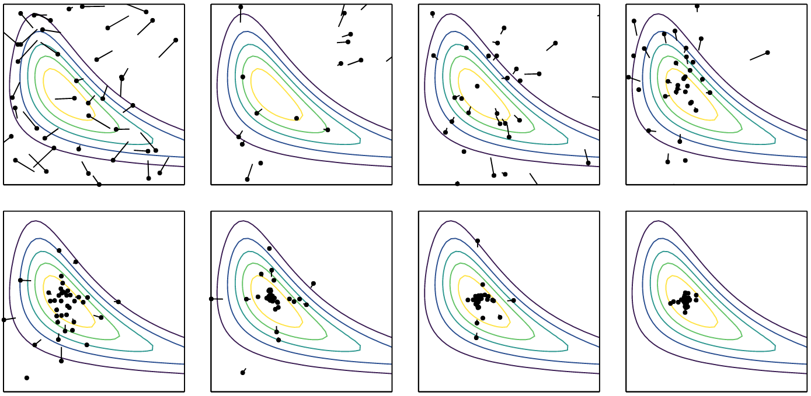
Particle Swarm Optimization (PSO)

Part 3
Application to Reinforcement Learning
Reinforcement Learning Landscape
In Reinforcement Learning, we can either:
- Learn the value function $V$ or optimize the action-value function $Q$ (DQN, …)
- Optimize the policy $\pi_{\boldsymbol{\theta}}$ (REINFORCE)
- Do both (Action Critic methods)
Direct Policy Search (DPS)
Policy Gradient is a special case of Direct Policy Search (DPS)
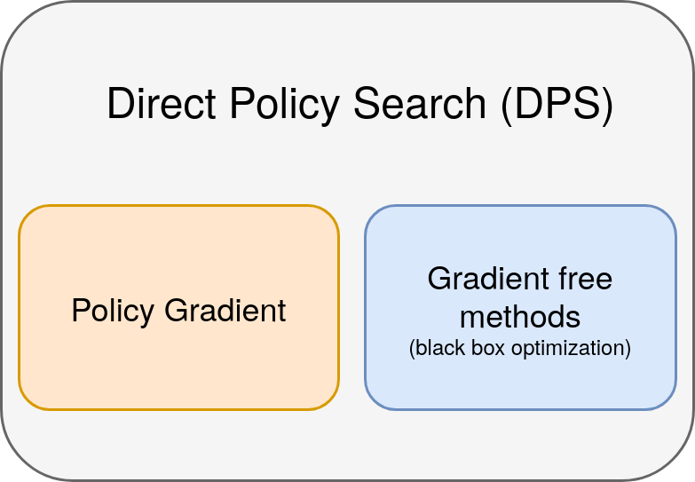
Policy Gradient (PG)
Policy Gradient is a special case of Direct Policy Search (DPS):
- PG search $\boldsymbol{\theta}^* = \arg\max_{\boldsymbol{\theta}} J(\boldsymbol{\theta})$ with a gradient ascent method
- Iteratively update $\boldsymbol{\theta}$ : $\quad \boldsymbol{\theta} \leftarrow \boldsymbol{\theta} + \alpha \nabla_{\boldsymbol{\theta}} J(\boldsymbol{\theta})$
- A convenient analytical formulation of $\nabla_{\boldsymbol{\theta}} J(\boldsymbol{\theta})$ is given by the Policy Gradient theorem:
$$\nabla_{\boldsymbol{\theta}} J(\boldsymbol{\theta}) = \nabla_{\boldsymbol{\theta}} V^{\pi_\boldsymbol{\theta}}(\boldsymbol{s}) = \mathbb{E}_{\pi_{\boldsymbol{\theta}}} \left[ \nabla_{\boldsymbol{\theta}} \log \pi_{\boldsymbol{\theta}}(\boldsymbol{s}, \boldsymbol{a}) Q^{\pi_{\boldsymbol{\theta}}}(\boldsymbol{s}, \boldsymbol{a}) \right]$$
DPS: gradient based VS gradient free methods
Possible issues with Policy Gradient (gradient based methods):
- May have a slow convergence
- Only found local optima
- Requires an analytical formulation of $\nabla_{\boldsymbol{\theta}} \ln \pi_{\boldsymbol{\theta}}$ which is not always known
Direct Policy Search methods using gradient free optimization procedures are interesting alternatives to tackle these issues:
- No gradient
- Search global optima
- Efficient if the parameters space is not too big (<100 dimensions)
- MDP (Markov Decision Process) assumptions not even required!
Direct Policy Search (DPS) - The Policy
Usually, the policy $\pi_{\boldsymbol{\theta}}$ (i.e. the agent) is a neural network
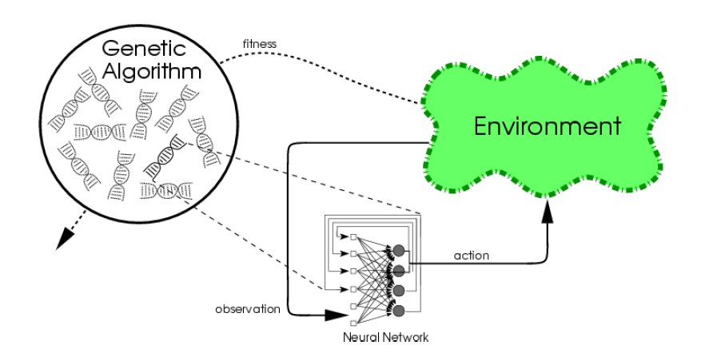
Usually, $\boldsymbol{\theta}$ is the weights of the neural network
Machine Learning
Few applications examples among thousands
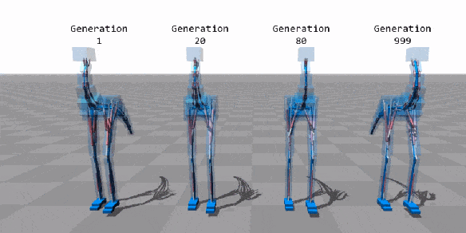
Flexible Muscle-Based Locomotion for Bipedal Creatures
T. Geijtenbeek, M van de Panne, F van der Stappen
https://youtu.be/pgaEE27nsQw
Direct Policy Search (DPS) - The Policy
$\boldsymbol{\theta}$ can also define the topology of the neural network
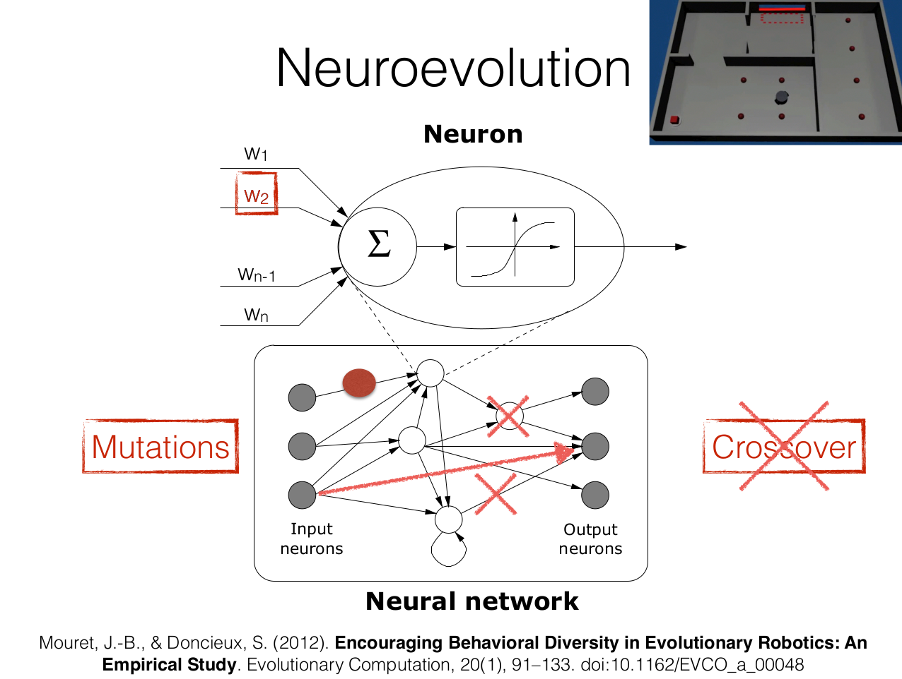
We call it neuroevolution
Direct Policy Search (DPS) - The Policy
In robotics, $\boldsymbol{\theta}$ can even define the topology of the robot itself !
http://www.demo.cs.brandeis.edu/golem/ https://www.creativemachineslab.com/golem.html
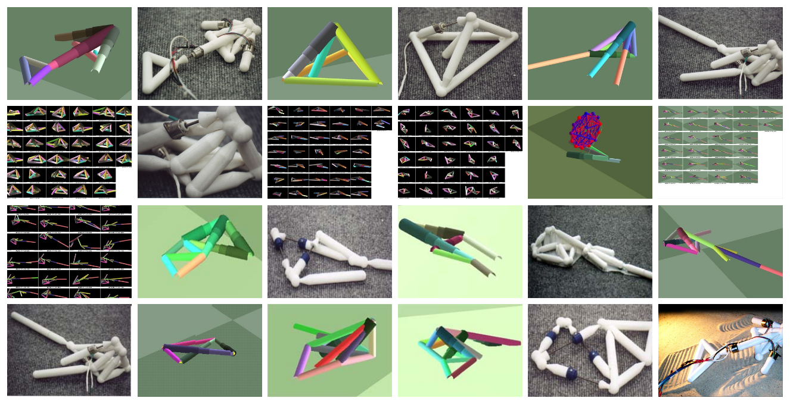
The Golem project
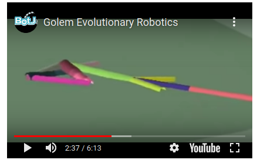
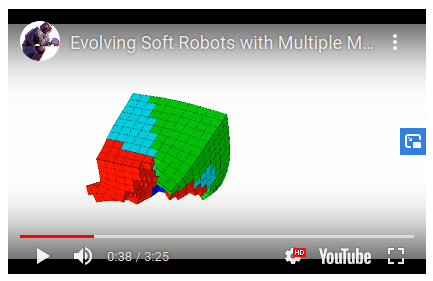
Other applications in robotics
Resilient robots
https://www.youtube.com/watch?v=T-c17RKh3uE&feature=youtu.be https://members.loria.fr/JBMouret/videos.html https://members.loria.fr/JBMouret/publications.html
Conclusion
Optimization landscape
Descent methods
- Gradient descent, Nesterov momentum, AdaGrad, Conjugate Gradient, Newton, …
- Widely used in Machine Learning
Local gradient free methods
- Pattern search
- Simple and useful alternative to gradient descent when we have no gradient
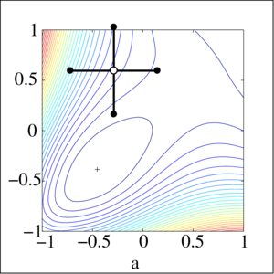
Optimization landscape
Global gradient free methods (blackbox)
- CEM, CMA-ES, SAES, GA, DE, ...
- Difficult multimodal functions
- Up to hundreds of dimensions
- Alternative to Deep RL for some problems
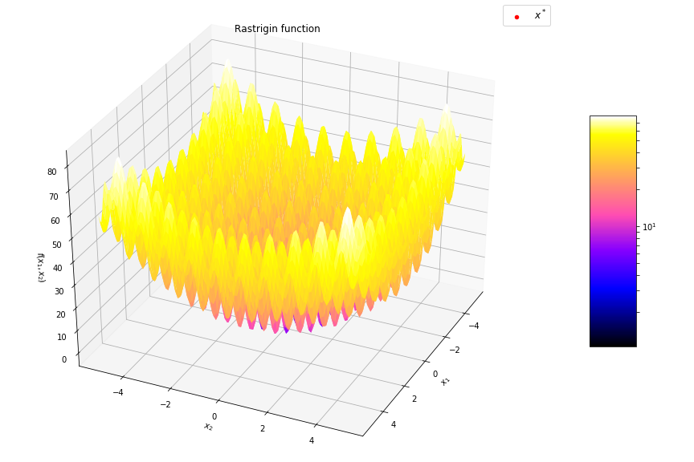
Optimization landscape
Linear programming
- Simplex algorithm
- Up to millions of dimensions
- But for linear objective function and linear constraints
- Widely used in the industry (traffic planning, logistic, …)
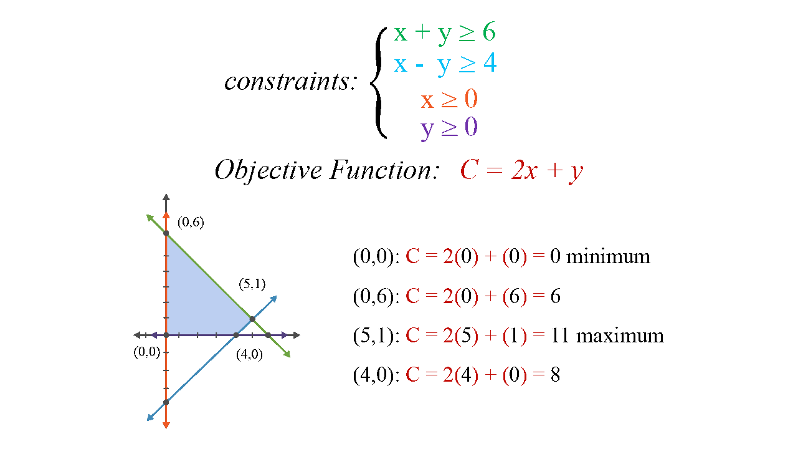
Benchmarks
Black box optimization
- BBoB workshop series
- Coco (Inria): http://numbbo.github.io/coco/
Software packages
Open Source
- CMA-ES
- scipy.optimize
- Deap
- ...
Mathematical programming
- Open source: Coin-OR (CBC, IPopt, Pyomo, PuLP, …), GLPK, CVXOPT
- Commercial: CPLEX, Xpress, Gurobi, Knitro, AMPL, GAMS, ...